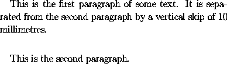
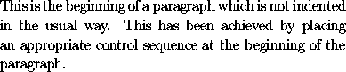

To produce (horizontal) blank space within a paragraph, use
\hspace, followed by the length
of the blank space enclosed within braces. The length
of the skip should be expressed in a unit recognized by LaTeX.
These recognized units are given in the following table:
Thus to produce a horizontal blank space of 20 mm in the middle of a paragraph one would typept point (1 in = 72.27 pt) pc pica (1 pc = 12 pt) in inch (1 in = 25.4 mm) bp big point (1 in = 72 bp) cm centimetre (1 cm = 10 mm) mm millimetre dd didot point (1157 dd = 1238 pt) cc cicero (1 cc = 12 dd) sp scaled point (65536 sp = 1 pt)
\hspace{20 mm}.
If LaTeX decides to break between lines at a point in the document
where an \hspace is specified, then no white
space is produced. To ensure that white space is produced
even at points in the document where line breaking takes place, one
should replace \hspace by \hspace*
To produce (vertical) blank space between paragraphs, use
\vspace, followed by the length of the blank space
enclosed within braces. Thus to obtain
one should type
This is the first paragraph of some text. It is
separated from the second paragraph by a vertical skip of
10 millimetres.
\vspace{10 mm}
This is the second paragraph.
If LaTeX decides to introduce at a point in the document
where a \vspace is specified, then no white
space is produced. To ensure that white space is produced
even at points in the document where page breaking takes place, one
should replace \vspace by \vspace*
We now describe certain features of LaTeX relating to blank spaces and paragraph indentation which will improve the appearance of the final document. Experienced users of LaTeX will improve the appearance of their documents if they bear these remarks in mind.
First note that, as a general rule, you should never put a blank space after a left parenthesis or before a right parenthesis. If you were to put a blank space in these places, then you run the risk that LaTeX might start a new line immediately after the left parenthesis or before the right parenthesis, leaving the parenthesis marooned at the beginning or end of a line.
LaTeX has its own rules for deciding the lengths of blank spaces. For instance, LaTeX will put an extra amount of space after a full stop if it considers that the full stop marks the end of a sentence.
The rule adopted by LaTeX is to regard a period (full stop) as the end of a sentence if it is preceded by a lowercase letter. If the period is preceded by an uppercase letter then LaTeX assumes that it is not a full stop but follows the initials of somebody's name.
This works very well in most cases. However LaTeX occasionally gets things wrong. This happens with a number of common abbreviations (as in `Mr.\ Smith' or in `etc.'), and, in particular, in the names of journals given in abbreviated form (e.g., `Proc.\ Amer.\ Math.\ Soc.'). The way to overcome this problem is to put a backslash before the blank space in question. Thus we should type
Mr.\ Smith etc.\ and Proc.\ Amer.\ Math.\ Soc.
LaTeX determines itself how to break up a paragraph into
lines, and will occasionally hyphenate long words where this
is desirable. However it is sometimes necessary to tell
LaTeX not to break at a particular blank space. The special
character used for this purpose is ~. It represents
a blank space at which LaTeX is not allowed to break between
lines. It is often desirable to use ~ in names where
the forenames are represented by initials. Thus to obtain
`W. R. Hamilton' it is best to type W.~R.~Hamilton.
It is also desirable in phrases like `Example 7' and
`the length l of the rod', obtained by typing
andExample~7
the length~$l$ of the rod.
LaTeX will automatically indent paragraphs (with the
exception of the first paragraph of a new section). One
can prevent LaTeX from indenting a paragraph though by
beginning the paragraph with the control sequence
\noindent. Thus one obtains
by typing
\noindent This is the beginning of a paragraph which is not indented in the usual way. This has been achieved by placing an appropriate control sequence at the beginning of the paragraph.
Conversely, the control sequence \indent forces
LaTeX to indent the paragraph.